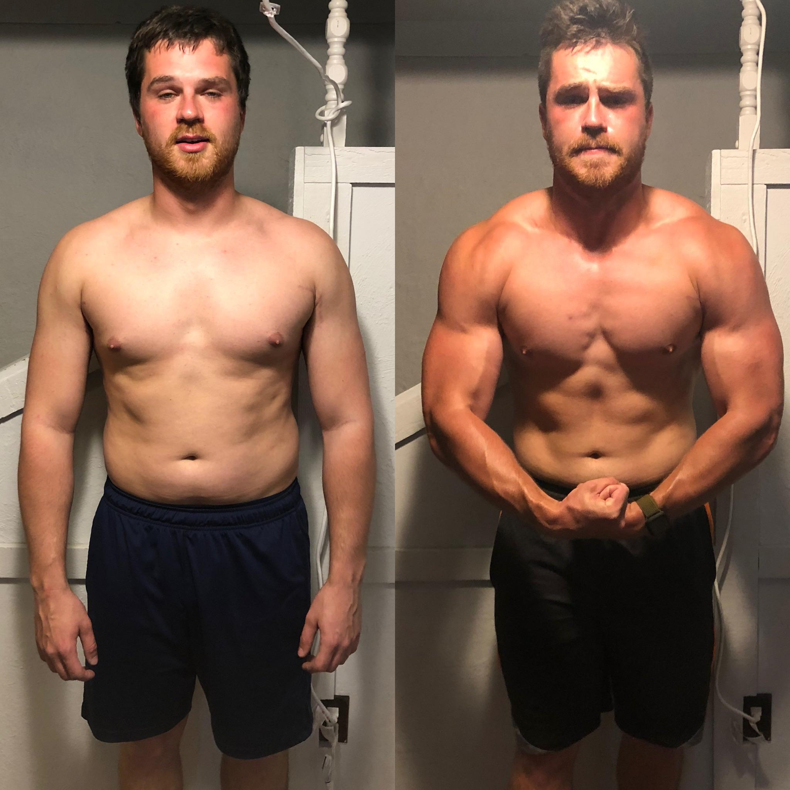

OUR MOTIVE!
If you a student or working on 9 to 5 job and you dont you the fixed time and resources to maintain you health.
Dont worry! We are here for you! to help you workout at home.So lets motivate you and show how we help people to change the shape and maintain their body and health.
Start Working Now
John Khan

John had always struggled with his fitness, feeling overwhelmed by the gym environment. However, everything changed when he discovered Workout Homie. With its easy-to-follow home workout plans and supportive community, John found the motivation he needed. He started with just a few bodyweight exercises in his living room, gradually building strength and confidence. Over time, his dedication paid off—he transformed not only his physique but also his mindset. Now, John proudly shares his journey on social media, inspiring others to embrace home workouts and discover the incredible results that can come from consistent effort and the right guidance.
Start Working Now
Ansha Ashley
Ashley had always wanted to get fit but felt intimidated by traditional gyms. When she stumbled upon Workout Homie, everything changed. The website offered tailored home workout routines that fit seamlessly into her busy schedule. With easy-to-follow videos and a vibrant community cheering her on, Ashley started her fitness journey in the comfort of her own home. She began with simple exercises, gradually increasing her strength and endurance. Over the months, she not only transformed her body but also gained a newfound confidence. Now, Ashley loves sharing her progress online, encouraging other women to take charge of their fitness journeys, just like she did.
Start Working Now